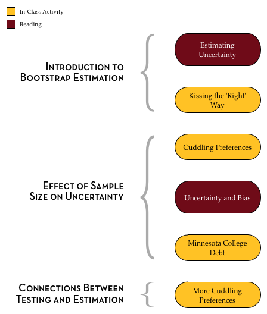

Estimating Uncertainty
Far better an approximate answer to the right question … than an exact answer to the wrong question.17
Aside from hypothesis testing, one of the most common uses of statistical inference is the estimation of unknown parameters using sample data. Polling is one application where statistical estimation is used. For example, Gallup and the Pew Research Center are organizations that use statistical estimation to provide snapshots of public attitudes and opinions on topics from politics and the economy, to social awareness and health and well-being. The results of their polls are seen on a daily basis in almost every newspaper, news blog and website across the world.
Statistical estimation is used by more than pollsters. Biologists, social scientists, and medical researchers use statistical estimation to quantify population characteristics. For example, each year the Minnesota Department of Natural Resources estimates the populations of various species of animal, bird, and fish. These estimates are used to help set hunting and fishing regulations, as well as to allocate resources.18
Quantifying Uncertainty: Interval Estimates
When statisticians report sample estimates, they typically provide the value of the estimate along with the quantification of uncertainty in this estimate. This uncertainty measurement gives us an indication of the “precision” of the estimate. For example, consider again the example of the person who lost his keys. In those pictures, recall, the places where he searched for his keys (the red x’s) represents that sample data.

Figure 7: This figure is a metaphor for statistical uncertainty.
One estimate that can be made from that data is the “mean” location.19 This location is marked with a big blue dot. This estmate is the one-location best guess about where the actual keys (the population parameter) are located. The yellow area represents the uncertainty; other places where the keys might be aside from the on-location best guess. Interpreting this uncertainty gives him a range of locations where the actual keys might be; the interval estimate.
Quantification of Uncertainty: Margin of Error
Interval estimates are often reported using the sample estimate (statistic) and a margin of error. For example, consider the following poll results reported in the New York Times on June 30, 2011:
As the housing market slumped over the last few years with a speed and magnitude not seen since the Great Depression, aspects of homeownership have been debated as never before. There are tough questions about the role the government should take…includ[ing] how much of a down payment lenders should demand. Whether buyers need to come up with a 20 percent down payment—the standard for decades, but beyond the reach of many families now—is hotly debated. Fifty-eight percent of respondents say lenders should require this, while 36 percent say they should not. The nationwide telephone poll was conducted June 24–28 with 979 adults and has a margin of sampling error of plus or minus three percentage points for all adults.
In this article, the percentage of all adults in the United States who believe that lenders should require a 20% down payment on a house was reported as:
- Sample estimate: 58%
- Margin of error: 3%
Although the interval estimate isn’t directly reported, it can be computed using the sample estimate and margin of error as,
\[ \mathrm{Sample~Estimate} \pm \mathrm{Margin~of~Error} \]
In this example,
\[ 58\% \pm 3\% = \left[55\%,~61\%\right] \]
Statisticians refer to this as an interval estimate because it gives an interval of plausible values for the percentage of all adults in the United States who believe that lenders should require a 20% down payment on a house. Based on the observed data, the best estimate for the “truth” (the population parameter) is that 58% of all adults in the United States believe that lenders should require a 20% down payment on a house. However, because of the uncertainty associated with random sampling, it may be that anywhere between 55% and 61% of all adults in the United States believe that lenders should require a 20% down payment on a house.
In the interpretation above, we associated the amount of uncertainty with variation because of random sampling. It turns out that the margin of error is directly related to the quantification of sampling error. In fact,
\[ \mathrm{Margin~of~Error} = 2 \times \mathrm{Standard~Error} \]
0.0.0.1 What is the Standard Error?
The standard error is just a fancy name for the standard deviation when the distribution is composed of statistics (e.g., means, percentages). In other words, the standard deviation of a set of simulated results. That means, in practice, we can use bootstrapping to model the sampling variation, obtain the standard deviation of the bootstrapped results, and use that along with the estimate from the observed data to obtain an interval estimate.
As you interpret interval estimates, there are a couple things to keep in mind.
- The interval estimate is being used to estimate the population parameter.
- The interval estimate gives a range of plausible values for the population parameter.
- Each value in the range are equally believable. (Values in the middle of the range are NOT more believable than values at the ends of the range.)
To further help you understand ideas related to the standard error and the margin of error, we would like you to read Chapter 10 (What is a Margin of Error?) from a short pamphlet put together by the American Statistical Association’s Section on Survey Research.
- It is available at http://www.prm.nau.edu/prm447/asa%20brochures/margin.pdf.
Outline and Goals of Unit 5
The following schematic outlines the course readings, in-class activities, and assignments for Unit 5.

In the readings, course activities, and assignments in Unit 5, you will explore the use of bootstrapping to make statistical estimates using TinkerPlots™. You will also learn about how sample size affects the precision/uncertainty of statistical estimates. Lastly, you will learn about the connections between hypthesis testing and estimation.
Tukey, J. (1962). The future of data analysis. Annals of Mathematical Statistics 33(1), 1–67.↩
Here is the Wolf Population report for 2016.↩
In two-dimensional space, like on a map, the “mean” is referred to as a centroid.↩